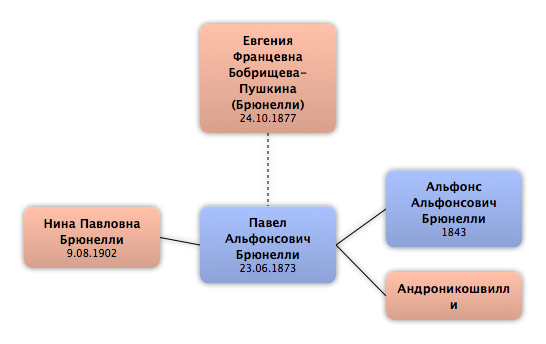

Домой
Домой
 Люди
Люди
 Семьи
Семьи
 Источники
Источники
 Диаграммы
Диаграммы
 Статистика
Статистика
Евгения Францевна Бобрищева-Пушкина

Контекст

Дополнительные имена
| Тип | Имя |
|---|---|
| Фамилия в браке | Брюнелли |
Родители
| Отец | Дата рождения | Мать | Дата рождения |
|---|
Родители и дети
| Партнёры | Дата рождения | Дети |
|---|---|---|
 Павел Альфонсович Брюнелли Павел Альфонсович Брюнелли
|
23.06.1873 |
Нина Павловна Брюнелли
|
События
| Тип события | Дата | Место | Описание |
|---|---|---|---|
| Рождение | 24.10.1877 | Санкт-Петербург, Россия | |
| Эмиграция | 1920 | Париж, Франция | |
| Смерть | 02.1949 | Париж, Франция |
Факты
Медиа
Примечание
http://www.artrz.ru/places/1804660654/1805207655.html
БРЮНЕЛЛИ (урожд. Бобрищева-Пушкина) Евгения Францевна
Brunelly E.
24 октября 1877 (С.-Петербург) – не ранее февраля 1949. Художник декоративно-прикладного искусства.
Первая жена петербургского адвоката, издателя и общественного деятеля полковника Павла Альфонсовича Брюнелли (1873–1949).
Мать художницы-портретистки и деятельницы скаутского движения Нины Брюнелли (1902, С.-Петербург – 1923, Ницца).
В 1920 эмигрировала с мужем и дочерью во Францию.
Жила в Париже.
Занималась изготовлением кукол на исторические и фольклорные сюжеты, расписывала пасхальные яйца.
БРЮНЕЛЛИ (урожд. Бобрищева-Пушкина) Евгения Францевна
Brunelly E.
24 октября 1877 (С.-Петербург) – не ранее февраля 1949. Художник декоративно-прикладного искусства.
Первая жена петербургского адвоката, издателя и общественного деятеля полковника Павла Альфонсовича Брюнелли (1873–1949).
Мать художницы-портретистки и деятельницы скаутского движения Нины Брюнелли (1902, С.-Петербург – 1923, Ницца).
В 1920 эмигрировала с мужем и дочерью во Францию.
Жила в Париже.
Занималась изготовлением кукол на исторические и фольклорные сюжеты, расписывала пасхальные яйца.
Источники
Родство
| Имя | Степень родства | Дата рождения | Место рождения | Дата смерти | Место смерти |
|---|---|---|---|---|---|
| Партнёров | |||||
| Партнёр или муж | 23.06.1873 | Манглиси, Грузия | 7.10.1949 | Париж, Франция | |
| Дети | |||||
| Дочь | 9.08.1902 | Санкт-Петербург, Россия | 17.09.1923 | Ницца, Франция | |